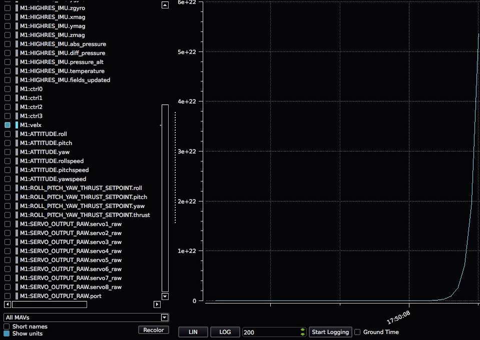

发送和接收调试值
在软件开发过程中，输出单个重要数字通常是必要的。 这就是 MAVLink 的通用 NAMED_VALUE_FLOAT、DEBUG 和 DEBUG_VECT 数据包的来源。
在 MAVLink 调试消息和 uORB 主题之间进行映射
MAVLink调试消息转换为/自 uORB 主题。 为了发送或接收 MAVLink 调试消息，您必须分别发布或订阅相应的主题。 下面是一个表，其中总结了 MAVLink 调试消息和 uORB 主题之间的映射：
| MAVLink 消息 | uORB topic |
|---|---|
| NAMED_VALUE_FLOAT | debug_key_value |
| DEBUG | debug_value |
| DEBUG_VECT | debug_vect |
教程：发送字符串/浮点配对
本教程演示如何使用关联的 uORB 主题 debug_key_value NAMED_VALUE_FLOAT 发送 MAVLink 消息。
本教程的代码可在此处找到：
- 调试教程代码
- Enable the tutorial app by ensuring the MAVLink debug app (px4_mavlink_debug) is uncommented in the config of your board.
设置调试发布所需的只是此代码段。 首先添加头文件：
#include <uORB/uORB.h>
#include <uORB/topics/debug_key_value.h>
然后广播调试值主题（一个针对不同发布名称的广播就足够了）。 把这个放在你的主循环前面：
/* 广播调试值 */
struct debug_key_value_s dbg = { .key = "velx", .value = 0.0f };
orb_advert_t pub_dbg = orb_advertise(ORB_ID(debug_key_value), &dbg);
而发送主循环更简单：
dbg.value = position[0];
orb_publish(ORB_ID(debug_key_value), pub_dbg, &dbg);
多个调试消息必须有足够的时间在各自的发布之间，Mavlink 可以处理它们。 这意味着，代码必须在发布多个调试消息之间等待，或者在每个函数调用迭代上替换消息。
然后，QGroundControl 中的结果在实时图形上如下所示：

教程：发送字符串/浮点配对
下面的代码段演示如何接收上一教程中发送的 velx 调试变量。
首先，订阅主题 debug_key_value：
#include <poll.h>
#include <uORB/topics/debug_key_value.h>
int debug_sub_fd = orb_subscribe(ORB_ID(debug_key_value));
[...]
然后对主题进行监听：
[...]
/* one could wait for multiple topics with this technique, just using one here */
px4_pollfd_struct_t fds[] = {
{ .fd = debug_sub_fd, .events = POLLIN },
};
while (true) {
/* 等待 debug_key_value 等待时间 1000 ms (1 秒) */
int poll_ret = px4_poll(fds, 1, 1000);
[...]
当 debug_key_value 主题上有新消息可用时，不要忘记根据其键属性对其进行筛选，以便放弃键与 velx 不同的消息：
[...]
if (fds[0].revents & POLLIN) {
/* 获取数据用于第一文件描述符 */
struct debug_key_value_s dbg;
/* 拷贝数据至本地缓存 */
orb_copy(ORB_ID(debug_key_value), debug_sub_fd, &dbg);
/* 基于 key attribute 的消息过滤器 */
if (strcmp(_sub_debug_vect.get().key, "velx") == 0) {
PX4_INFO("velx:\t%8.4f", dbg.value);
}
}
}